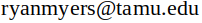

Email: 
Disclaimer
Copyright 2013, Daniel V. Schroeder
Permission is hereby granted, free of charge, to any person obtaining a copy of
this software and associated data and documentation (the "Software"), to deal in
the Software without restriction, including without limitation the rights to
use, copy, modify, merge, publish, distribute, sublicense, and/or sell copies
of the Software, and to permit persons to whom the Software is furnished to do
so, subject to the following conditions:
The above copyright notice and this permission notice shall be included in all
copies or substantial portions of the Software.
THE SOFTWARE IS PROVIDED "AS IS", WITHOUT WARRANTY OF ANY KIND, EXPRESS OR IMPLIED,
INCLUDING BUT NOT LIMITED TO THE WARRANTIES OF MERCHANTABILITY, FITNESS FOR A
PARTICULAR PURPOSE AND NONINFRINGEMENT. IN NO EVENT SHALL THE AUTHOR BE LIABLE FOR
ANY CLAIM, DAMAGES OR OTHER LIABILITY, WHETHER IN AN ACTION OF CONTRACT, TORT OR
OTHERWISE, ARISING FROM, OUT OF OR IN CONNECTION WITH THE SOFTWARE OR THE USE OR
OTHER DEALINGS IN THE SOFTWARE.
Except as contained in this notice, the name of the author shall not be used in
advertising or otherwise to promote the sale, use or other dealings in this
Software without prior written authorization.
References
Dr. Schroeder’s Website
Dr. Shroeder’s Simulation
Other JavaScript Apps
Dr. Shroeder’s Paper on LBM
Workshop on how to create apps
Dr. Shroeder’s Book on JavaScript Physics
Dr. Wagner’s Resources on LBM
My fluid mechanics book: Fundamentals of Fluid Mechanics. B. R. Munson, T. H. Okiishi, W. W. Huebsch, and A. P.Rothmayer. Hoboken, NJ: John Wiley & Sons, Inc., 2013.
12 Steps to Navier Stokes by Dr. Barba
While I have used many CFD guides, I personally think this one by Dr. Makky is the best for my level of understanding.
Feel free to email me with other suggestions or if you wish to have more on the subject.
Also, this introduction by Dr. Bhaskaran and Dr. Collins is fantastic
W3Schools’ extensive resources on web development
Lastly, thank you to my professors who have given me the foundation of knowledge and interest to learn more about all of this.